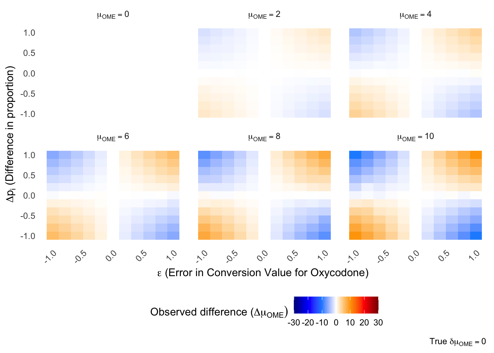
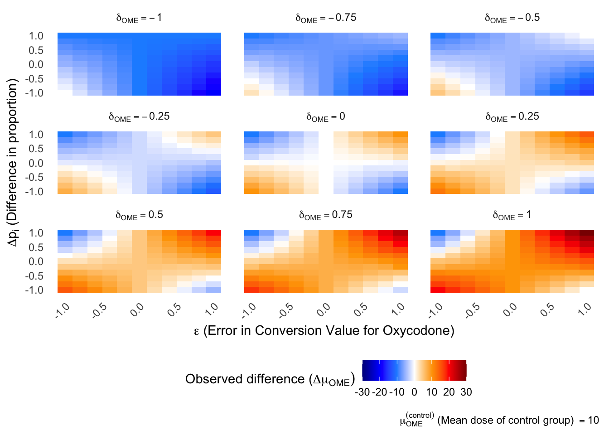
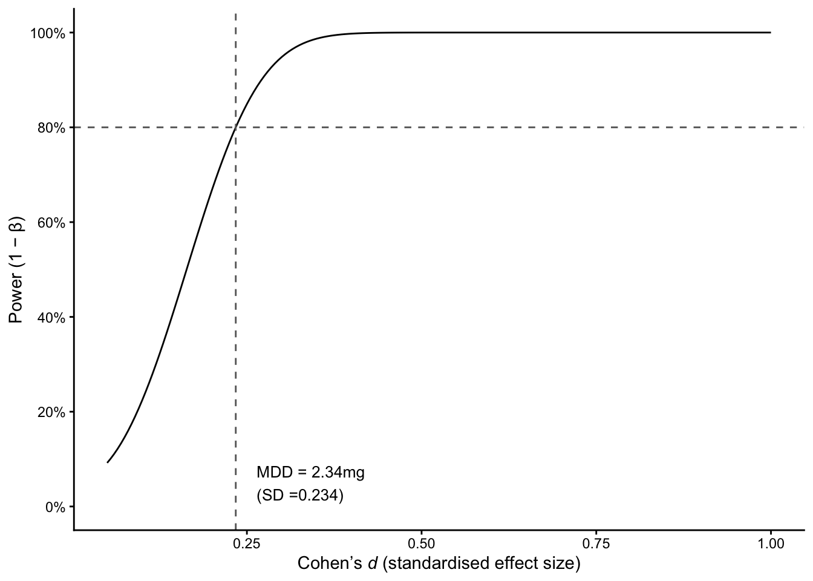

| Variable | Options | Explanatory text |
|---|---|---|
| Study type | Randomised controlled trial, Cohort study, Case controlled study, Other | What is the format of the study? |
| Opioid conversion set | Cited, Included in paper, Not described | In the methods section, is how is the OME metric generated described and how are the conversion values referenced? |
| Intervention | Surgical intervention, Anaesthetic intervnetion, Other | What type of intervention is given. For pre/post-operative interventions that include changes to medication select anaesthesia. For descriptive studies analysing differences select other. |
| Opioid proportions reported between intervetnion groups | Described or Not described | Assess the results section, Is it possible to establish the proprotion, mean or total doses of each opioid between intervention groups. If authros explicilty state only one type of opioid used in the OME/MME metric select ‘Described’. |
| Outcome | Difference in opioid requirement/treatment, No difference | In the primary outcome of OME/MME, is there a significant difference reported between intervention groups. |
| Data avalibility | Publically avalible, Not publically avaliable, Database study | Is data avalible for readers to ascertain the proportions of opioids between groups? If OME/MME metric only avaliable then select ‘Not avalible’. |
Appendix A — Supplementary materials
A.1 Example opioid equivalence calculation
Question: What dose of intravenous fentanyl will provide equal analgesic benefit to 5 mg of intravenous morphine, assuming IV fentanyl is 100 times more potent.
\[\begin{align} \rho_{\text{fentanyl,IV}} = 100 \\ c_{\text{fentanyl,IV}} = \frac{1}{\rho_{\text{fentanyl,IV}}} \\ c_{\text{fentanyl,IV}} = \frac{1}{100} = 0.01 \\ \end{align}\]
First we use the potency value to find the conversion value to be 0.01.
\[\begin{align} d_{\text{morphine}} \times c_{\text{fentanyl,IV}} = d_{\text{fentanyl}} \\ 5 \times 0.01 = 0.05\text{mg} = 50\text{mcg} \end{align}\]
Then we multiple our reference dose of 5mg of morphine by the conversion value to find the equivalent dose of fentanyl to be 0.05 mg or 50 mcg.
This approach can also be used to convert from two non-reference medications by firstly converting to the reference (often oral morphine) and then to the target medication.
A.2 Mathematical proofs
A.2.1 Rearrangement of Equation eq-mu-ome-1 to Equation eq-mu-ome-final
The equation for the group mean OME provided Equation eq-mu-ome-1 is is a weighted sum of the OME values for patients \(j\) in group \(G\).
\[ \begin{align} \text{OME}_j &= \sum_{i\in\mathbf{M}} d_i c_{i,r} \\ \mu_{\text{OME}}^{(G)} &= \frac{1}{|G|} \sum_{j=G} \text{OME}_j \end{align} \] First the the expression for \(\text{OME}_j\) is substituted into the group mean. Then the order of summation is rearranged as both the sets \(G\) and \(\mathbf{M}\) are finite. Following this, the constant \(c_{i,r}\) is factored out of the inner sum whilst the scaling term \(\frac{1}{|G|}\) of group size is distributed to the inner term.
\[ \begin{align} \mu_{\text{OME}}^{(G)} &= \frac{1}{|G|} \sum_{j \in G} \left( \sum_{i\in\mathbf{M}} d_{j,i} c_{i,r} \right) \\ \mu_{\text{OME}}^{(G)} &= \frac{1}{|G|} \sum_{j \in G} \sum_{i\in\mathbf{M}} d_{j,i} c_{i,r} \\ \mu_{\text{OME}}^{(G)} &= \sum_{i\in\mathbf{M}} \left( \frac{1}{|G|} \sum_{j=1} d_{j,i} \right) c_{i,r} \end{align} \]
We can then define the mean dose \(\bar{d}\) of medication \(i\) as the arithmetic mean of doses for patients \(j \in G\).
\[ \bar{d_i} = \frac{1}{|G|} \sum_{j \in G} d_{j,i} \] This mean dose is then substituted back into the equation to yield the final rearrangement as seen in Equation eq-mu-ome-final.
\[ \mu_{\text{OME}}^{(G)} = \sum_{i\in\mathbf{M}} \bar{d_{i}} c_{i,r} \]
A.2.2 Sensitivity of the arithmetic mean to differing proportions of \(\bar{d_i}\)
A.2.2.1 True treatment effect
Equation Equation eq-mu-ome-final outlines the calculation of a sample mean OME within a finite group. At the population level, using a simplified linear, confounder-free treatment effect, the expected OME of the treated population \(\mathbb{E}[\text{OME} \mid T = 1]\) is modelled as a function of the baseline expectation \(\mathbb{E}[\text{OME} \mid T = 0]\) and a standardized treatment effect (\(t\)) scaled by the baseline population standard deviation \(\sigma_p\) (assuming homoscedasticity)
\[ \mathbb{E}[\text{OME} \mid T = 1] = \mathbb{E}[\text{OME} \mid T = 0] + t \cdot \sigma_{p} \]
To estimate \(t\) we will often measure the difference in the the observed mean of each group (\(\mu_{\text{OME}}^{(T = 1)} - \mu_{\text{OME}}^{(T = 0)}\)) divided by the variance \(\sigma\).
\[ \begin{align} \mu_{\text{OME}}^{(T = 1)} &= \mu_{\text{OME}}^{(T = 0)} + t \cdot \sigma_{p} \\[1em] t &= \frac{\mu_{\text{OME}}^{(T = 1)} - \mu_{\text{OME}}^{(T = 0)} }{\sigma_p} = \frac{\Delta \mu_{\text{OME}}}{\sigma_p} \\ \end{align} \]
A.2.2.2 Conditional Component Definition
For any medication \(i \in \mathbf{M}\) within a study cohort \(G \in \{T=1, T=0\}\), the unconditional mean dose \(\mu_{d_i}^{(G)}\) (as used in Equation eq-mu-ome-final ) can be decomposed as the product of the prescribing proportion \(p_i\) and the conditional mean dose \(\hat{d}_i\) amoung treated patients.
\[ \bar{d}_i^{(G)} = p_i^{(G)} \cdot \hat{d}_i^{(G)} \tag{A.1}\]
where:
\(p_i^{(G)} = P(d_i > 0 \mid G)\) represents the proportion of patients in group \(G\) receiving medication \(i\).
\(\hat{d}_i^{(G)} = E[d_i \mid d_i > 0, G]\) represents the conditional mean dose among actively treated patients.
A.2.2.3 Group Difference Expansion
Substituting Equation eq-conditional-mean into Equation eq-mu-ome-final for groups \(T=1\) and \(T=0\):
\[ \Delta\mu_{\text{OME}} = \mu_{\text{OME}}^{(T=1)} - \mu_{\text{OME}}^{(T=0)} = \sum_{i\in\mathbf{M}} \left( p_i^{(T=1)}\hat{d}_i^{(T=1)} - p_i^{(T=0)}\hat{d}_i^{(T=0)} \right) c_{i,r} \tag{A.2}\]
A.2.2.4 Counterfactual Counter-Balancing
By adding and subtracting the cross-term \(p_i^{(T=0)}\hat{d}_i^{(T=0)\)
\[ \Delta\mu_{\text{OME}} = \sum_{i\in\mathbf{M}} \left( p_i^{(T=1)}\hat{d}_i^{(T=1)} - p_i^{(T=1)}\hat{d}_i^{(T=0)} + p_i^{(T=1)}\hat{d}_i^{(T=0)} - p_i^{(T=0)}\hat{d}_i^{(T=0)} \right) c_{i,r} \tag{A.3}\]
A.2.2.5 Final Structural Decomposition
Factoring out the shared terms isolates the two independent drivers of macroscopic OME divergence:
\[ \Delta\mu_{\text{OME}} = \sum_{i\in\mathbf{M}} \underbrace{p_i^{(T=1)}\left(\hat{d}_i^{(T=1)} - \hat{d}_i^{(T=0)}\right)c_{i,r}}_{\text{treatment effect}} + \sum_{i\in\mathbf{M}} \underbrace{\hat{d}_i^{(T=0)}\left(p_i^{(T=1)} - p_i^{(T=0)}\right)c_{i,r}}_{\text{proportion effect}} \tag{A.4}\] The first term reflects genuine dose-intensity change among treated patients: this is the component the estimator in Equation eq-t-estimator intends to recover as \(t \cdot \sigma_p\). The second term arises purely from differing prescribing proportions \(p_i^{(G)}\) between groups and is not attributable to treatment. This means that the the difference in group means \(\Delta\mu_{\text{OME}}\) will only be equal to \(t \cdot \sigma_p\) in the special case where the prescribing portions between groups are equal \(p_i^{(T=1)} = p_i^{(T=0)}\), otherwise it only approximates the treatment effect.
A.2.3 Simulation study
$$ \[\begin{aligned} \Delta \mu_{\text{OME}} = -1 \cdot \Delta p_i \cdot \delta c_i \\ \Delta \mu_{\text{OME}} = -\mu_{\text{OME}}^\text{(control)} \cdot \Delta p_i \cdot \delta c_i \\ \\ p_i^{\text{(control)}} - p_i^{\text{(intervention)}} \\ \mu_{\text{OME}}^{\text{(control)}} - \mu_{\text{OME}}^{\text{(intervention)}} = -\mu_{\text{OME}}^\text{(control)} \cdot \Delta p_i \cdot \delta c_i \\ \mu^\text{intervention} = \mu^\text{control}[ 1 + \Delta p_i \cdot \delta c_i] \end{aligned}\]$$ {#eq-results-simple-2-proof}
A.2.4 Clinical Significance
- Associational difference: Quantifies the true statistical association by isolating shifts in the active treatment magnitude while holding the selection rate constant (\(p_i^{(A)}\)).
- Medication proportion Effect: Quantifies the structural selection bias. A shift in the prevalence of medication usage (\(p_i^{(A)} \neq p_i^{(B)}\)) alters \(\mu_{\text{OME}}\) linearly via \(c_{i,r}\), even if the active proportions of medications are perfectly homogeneous (\(\bar{d}_i^{(A)} = \bar{d}_i^{(B)}\)).
A.3 Literature search
A.4 PUBMED search terms
On 14th of July 2026, a search was performed on the PUBMED online search tool using the following search term to identify the volume of literature using opioid equivalence metrics in research. The search term was “(Milligram morphine equivalent) OR (Oral morphine equivalent)” with a 10 year filter was used and yielded the following full search string. There was 4,031 results.
PUBMED search term
(((“milligram”[All Fields] OR “milligrams”[All Fields]) AND (“morphine derivatives”[Supplementary Concept] OR “morphine derivatives”[All Fields] OR “morphines”[All Fields] OR “morphine derivatives”[MeSH Terms] OR (“morphine”[All Fields] AND “derivatives”[All Fields]) OR “morphine”[Supplementary Concept] OR “morphine”[All Fields] OR “morphin”[All Fields] OR “morphine”[MeSH Terms] OR “morphine s”[All Fields] OR “morphinic”[All Fields]) AND (“equivalence”[All Fields] OR “equivalences”[All Fields] OR “equivalencies”[All Fields] OR “equivalency”[All Fields] OR “equivalent”[All Fields] OR “equivalently”[All Fields] OR “equivalents”[All Fields])) OR ((“mouth”[MeSH Terms] OR “mouth”[All Fields] OR “oral”[All Fields]) AND (“morphine derivatives”[Supplementary Concept] OR “morphine derivatives”[All Fields] OR “morphines”[All Fields] OR “morphine derivatives”[MeSH Terms] OR (“morphine”[All Fields] AND “derivatives”[All Fields]) OR “morphine”[Supplementary Concept] OR “morphine”[All Fields] OR “morphin”[All Fields] OR “morphine”[MeSH Terms] OR “morphine s”[All Fields] OR “morphinic”[All Fields]) AND (“equivalence”[All Fields] OR “equivalences”[All Fields] OR “equivalencies”[All Fields] OR “equivalency”[All Fields] OR “equivalent”[All Fields] OR “equivalently”[All Fields] OR “equivalents”[All Fields]))) AND (y_10[Filter])
A.4.1 PUBMED search terms
The search term was executed on the PUBMED online search tool on 7th July 2026.
PUBMED search term
((((((“opioid equivalent” OR “oral morphine equivalence” OR “oral morphine equivalent” OR “oral morphine equivalents” OR “OME” OR “morphine milligram equivalents” OR “morphine milligram equivalence” OR “MME” OR “morphine equivalent daily dose” OR “MEDD”) AND (“perioperative” OR “peri-operative” OR “postoperative” OR “post-operative” OR “surgical” OR “surgery” OR “post-surgical” OR “postsurgical”))) AND (“2025/01/01”[Date - Publication] : “2025/12/31”[Date - Publication]))) AND (“clinical trial”[Filter] OR “clinical trial” OR “controlled clinical trial” OR “randomized controlled trial” OR “interventional” OR “intervention study” OR “clinical trials as topic”[MeSH Terms] OR “cohort studies”[MeSH Terms] OR “cohort” OR “prospective” OR “retrospective” OR “case-control” OR “comparative study” OR “evaluation study”))
A.4.2 Covidence extraction form
Data was extracted from selected papers using the following proforma by a single author. Authors could leave notes to highlight specific features for later analysis required.
A.5 Simulation study
A.5.1 Effect of \(\mu_{\text{OME}}^{\text{(control)}}\) on simple simulation
To investigate the scaling term of \(\mu_{\text{OME}}^{\text{(control)}}\) on the observed treatment effect, 6 further simulations were performed, each as described in sec-manuscript-simple-sim but with a different \(\mu_{\text{OME}}^{\text{(control)}}\) between 0 OME mg and 10 OME mg. The treatment effect was fixed at 0.
Attaching package: 'dplyr'The following objects are masked from 'package:stats':
filter, lagThe following objects are masked from 'package:base':
intersect, setdiff, setequal, union
A.5.2 Effect of \(\Delta \mu_{\text{OME}}\) on simple simulation
To investigate the interaction of a true treatment effect on the observed treatment effect, 9 further simulations were performed, each as described in sec-manuscript-simple-sim but with a different true treatment effect between the values of -1 and 1.

A.5.3 Power calculation
In the first part of the experiment a large effect size is used.
For a study period of 5.9904306 years and a annual case volume of 100 the total number of expected study participants is 599.0430622, of which we would expect 239.5078606 to be robotic cases and 359.5352016 given a 2.9938483year period where 80% of cases are performed robotically.
Assuming a 50 mg (SD: 10 mg) mean opioid requirement for the non-robotic population, we can calculate the expected mean OME requirement for robotic and non-robotic cases given a 0.8 effect size. The expected mean OME requirement for robotic cases is 40 mg giving a mean difference of -10 mg or -1 standard deviations.
Given the inital experimental set up it is clear that the study is very highly powered with the power value to be calculated at 100%.
Figure fig-power-curve demonstrated the power curve for the comparison of OME between robotic and non-robotic surgical groups. The dashed lines indicate the minimum detectable effect size at 80% power.

With the observed sample sizes, the minimum detectable effect size at 80% power is d = 0.234, which equates to a mean difference of 2.34 mg OME.
The effect size is use to inform the weakly powered study in
```